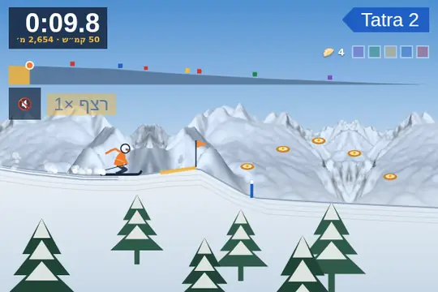
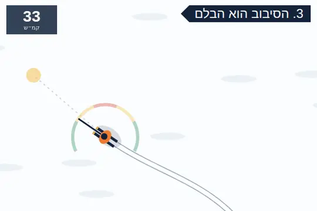
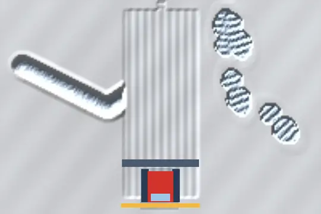
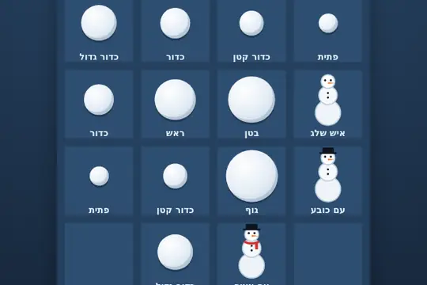

— · כרטיס עלייה · חזור—
מ—מוצא
אל—יעד
טיסה—המראה—נחיתה—
נוסעים—כבודה—ימי סקי—
נתלש!
נתראה בשדה
נתראה בשדה
נגיעה בכרטיס שמאחור מחליפה · נגיעה בספח תולשתעריכה
בלי הרשמה. נשמר רק בדפדפן הזה, ואפשר למחוק בכל רגע.
מצב הרכבליםההר עוד ישןעוד אין דיווח על רכבלים. העונה בגודאורי נפתחת בדרך כלל בדצמבר, ואז השלטים יתנקו מהשלג.בלי סיסמה, ובלי מיילים מאיתנו. רק השם, ומה שגוגל או אפל מעבירים.
כל השאר עובד בלי חשבון: המפה, הטיול שלך, המשחקים, וגם הצטרפות לקבוצה בקוד.
מה שכבר שמור בדפדפן הזה (הטיול שלך) עובר לחשבון.
מדיניות פרטיותכמה דרכים לאותו חשבון, כדי שלא ייווצר חשבון שני.
הטיול שלך והקבוצות מסונכרנים בין האתר לאפליקציה.
כאן מוחקים את החשבון של האתר ושל האפליקציה, גם בלי האפליקציה. נכנסים עם אותה דרך שבה נרשמת, ומאשרים.
הכל נמחק מיד, בלי תקופת המתנה. מה ששמור בטלפון או בדפדפן נשאר שם, עד שמוחקים את האפליקציה או מנקים את הדפדפן. בקבוצה שרק את/ה מנהל/ת בה, המנהלות עוברת לחבר אחר.
אין גישה לחשבון? כתבו לנו מאותו מייל, ונמחק תוך 30 יום: pinisagent@gmail.com
מדיניות פרטיותבלי הרשמה. הדפדפן הזה זוכר אותך; אפשר לשמור חשבון עם גוגל או אפל אחר כך.
החלפת טלפון או דפדפן? בוחרים את השם שלך, והמנהל מאשר. הכל חוזר, בלי כפיל.
יש לך את האפליקציה? אחרי ההתקנה מקלידים את הקוד
מדיניות פרטיות · אתר ואפליקציה לא רשמיים, בלי קשר ל-MTA.
הירידה הצפונית מ-Kobi Pass לכפר Kobi. מוקטן ביחס למפה הראשית.
על השלג של גודאורי. השיאים נשמרים בדפדפן, ומי שבקבוצה רואה אותם גם בטבלת הקבוצה. מומלץ עם צליל.

הירידה של החבר׳ההירידה על המסלולים האמיתייםגולשים על הפרופיל האמיתי של מסלולי גודאורי, אוספים את החבר׳ה ובורחים מהמפולת. מחזיקים כדי להתכופף, משחררים כדי לקפוץ.
בית הספר לסקימעצירה בפיצה ועד קרווינגשבעה שיעורים. בכל שיעור עיקרון אחד ותרגיל שבנוי בשבילו, עם מאמן שאומר מה קורה.
שלג טרילגעת בשלג ולרסק אגם קפואאצבע, מגף, מגלשיים או חתול שלג, עם הצליל של אבקה, קרום ושלג רטוב.
איחוד כדורי שלגמפתית ועד מלך קזבקמחליקים, ושני כדורים זהים מתאחדים לגדול יותר.לפי החיבורים בנתוני המסלולים. בלי זמנים ובלי תורים.
הקישור עובד בלי הרשמה: המקום, היום והשעה נמצאים בתוך הקישור עצמו.